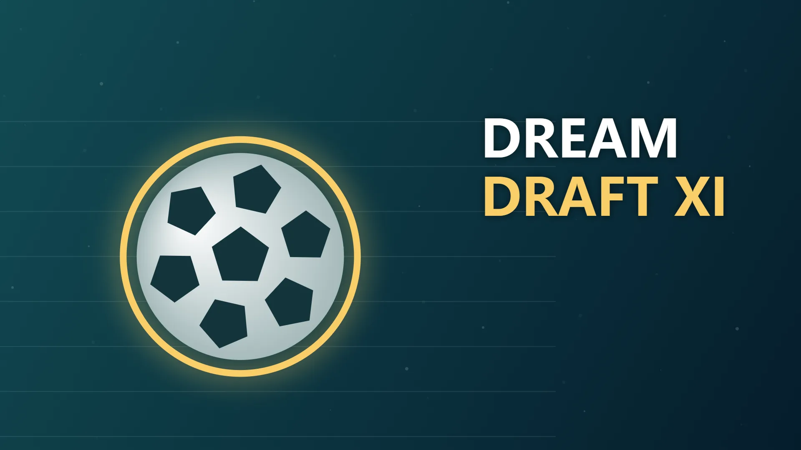

Dream Draft XI
Draft 11 fictional players, balance positions and chemistry, then simulate a complete 30-match league.

Opening the English game… Continue to play
Draft 11 fictional players, balance positions and chemistry, then simulate a complete 30-match league.

Opening the English game… Continue to play